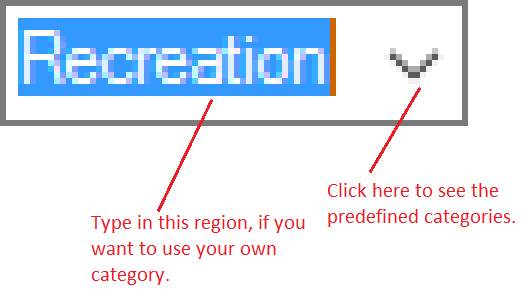

You can add either deposits or withdrawals. Deposits are profits, or any other gains. Withdrawals are expenses, or other losses. Once you have created the transaction, it is recommended that you save your changes, either by pressing CTRL + S, or the Save icon in the toolbar. (Unless you have made mistakes).
Deposits
To create a new deposit, you can:
- Click the "New Deposit" button from the drop-down menu in the toolbar
- Click "New Deposit" in the "Edit" menu
- Right-click the empty white space and click "New Deposit" in the context menu that appears or
- Press the keyboard hotkey CTRL + D
When you do any of the above, you should see a dialog like this:
| Component | Explanation |
|---|---|
| Description |
Here goes the description of the transaction. For example, if you bought 10 books,
you could write "10 books" in this field. Note that the maximum amount of characters in this field is 32. |
| Category | Into this drop down list, you can type a category, which is useful for orginization. For example, if you got a paycheck, you could use the pre-defined "Salary" category, or make your own. |
| Amount | This is the value of the transaction. If you lost $100.86, you could type 100.86 into the first box. When you press the decimal point, the other box now recieves the rest of the keyboard input. Thus, the first box would have "100" and the second would have "86". |
| Qty... | When this button is pressed, a prompt will be shown asking you to enter a unit price, and quantity. For example, if you bought 10 chocolate bars for 1.25 each, write "1.25" in the Amount field, and in the Quantity field, write "10". When you press OK, the "Amount" field in the "New Deposit" dialog will say 12.50 (1.25 x 10). |
| Date | This is where you select the date when this transaction occurred. By default it contains today. To change the date, press the little arrow on the right. A month calendar appears, on which you can click on a date. |
| Ok and New | Creates this deposit, but then shows this same dialog again. This is convenient if you need to add several deposits at once. |
| Cancel | Cancels this operation. No changes will be made, and the deposit will not be created |
| OK | Confirms that you want to create this deposit. It will be appended to the table |
Withdrawals
Withdrawals work in exactly the same as deposits, so see the "Deposits" section.
Category Meanings
- Food
- This category is intended for any food purchases. For example, buying a loaf of bread should use this category
- Salary
- This category is intended for any incomes from your job, like your yearly salary.
- Bills
- This category is intended for any bills you pay, like your monthly cable bills.
- Recreation
- This category is intended for any recreational spendings, like parties or games.
- Car
- This category is intended for any car spendings, like auto repairs, or buying a new car.
- Gift
- This category is intended for any money spent on gifts for others on special occasions, like birthdays.
- Profits
- This category differs from "Salary", because "Salary" is intended for a constant cash flow, whereas "Profits" are intended for unexpected incomes. For example, you may sell candy as a secondary job. Incomes from selling candy would go under "Profits", rather than "Salary".
Note that you can also type your own categories, by simply typing in the box labeled "Category". The categories mentioned above are predefined, and can be accessed by clicking the arrow to the right of the box labeled "Category".
